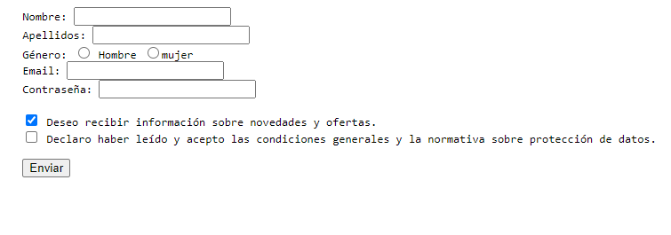

Crear el siguiente formulario
Como ya se ha visto, un formulario es un conjunto de controles (botones, cajas de texto, casillas de verificación, botones radio, etc.) que permiten al usuario introducir datos y enviarlos al servidor web para su procesamiento.
Como primera actividad de esta unidad formativa, le solicitamos:
Cree un formulario de registro donde deberá recopilar la siguiente información del usuario:
- Nombre
- Apellidos
- Género
- Contraseña
Además, deberá añadir dos casillas de verificación. Una será para que el usuario acepte recibir novedades y noticias, la cual deberá estar seleccionada. La otra será para aceptar las condiciones de la página.
Además, identifique las etiquetas y atributos que ha utilizado en la creación de esta actividad.
Importante: Debe utilizar la etiqueta <pre>
El resultado será el siguiente:
Formulario
Actividad asociada al CE2.1
Identificar las etiquetas y los atributos que se utilizan en la creación de los formularios, teniendo en cuenta las especificaciones del lenguaje de marcas.
En el formulario se utilizan las siguientes etiquetas y atributos:
<form>: etiqueta que indica el inicio y el final del formulario.
- 'action' atributo que especifica la URL del script que procesará los datos del formulario.
- 'method' atributo que indica el método HTTP a utilizar para enviar los datos del formulario. En este caso se utiliza "post".
<label>: etiqueta que se utiliza para asociar un texto a un control de formulario. Se utiliza para dar una descripción al usuario sobre el propósito del campo de entrada.
- 'for' atributo que especifica el id del control al que se refiere el label.
<input>: etiqueta que se utiliza para crear un control de formulario.
- 'type' atributo que indica el tipo de control que se va a crear. En este formulario se utilizan varios tipos: "text", "radio", "email", "password", y "checkbox".
- 'id' atributo que especifica un identificador único para el control.
- 'name' atributo que especifica el nombre del control. Este es el nombre que se utilizará para identificar el valor del control en el servidor.
- 'required' atributo que indica que el control es obligatorio. El usuario no podrá enviar el formulario si este control no contiene un valor.
- 'value' atributo que especifica el valor que se enviará al servidor cuando el usuario seleccione una opción (en el caso de los radio buttons).
- 'checked' atributo que indica que el checkbox estará marcado por defecto.
<input type="submit">: Tipo que se utiliza para crear un botón de envío de formulario.
- 'value' atributo que especifica el texto que se mostrará en el botón. En este caso, "Enviar".